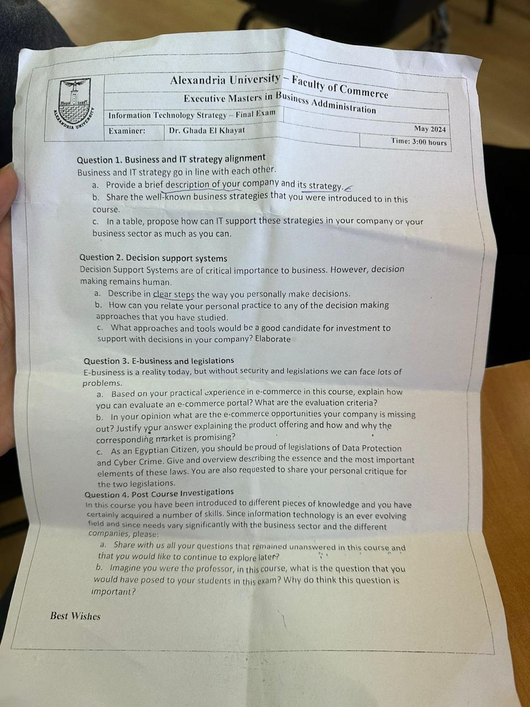
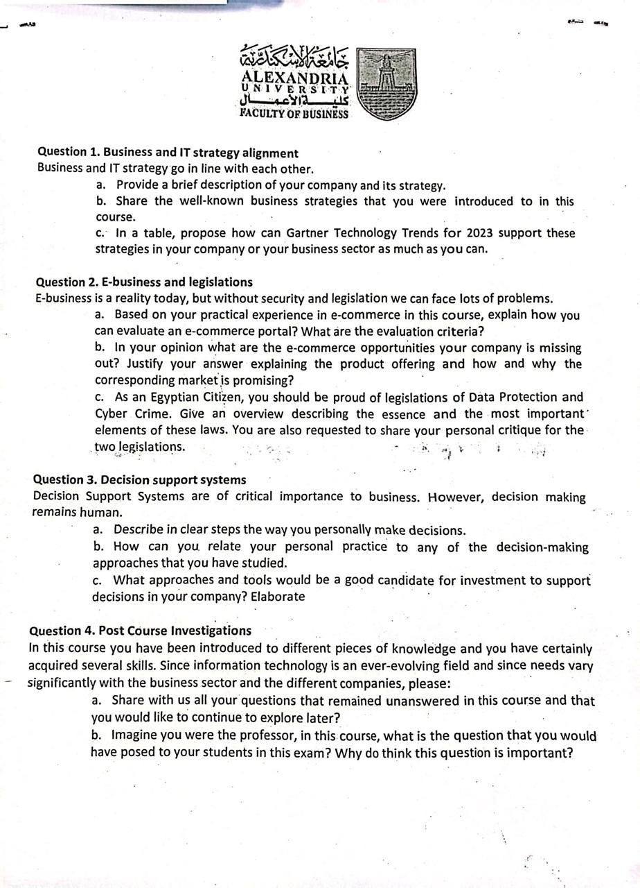

The classic four-question paper
The backbone she has reused, almost word for word, across the 2023, May 2024, 2025 and Enppi sittings. If she runs this paper, all four questions are predictable. Learn these four answers and you have covered most of what she asks.
The real paper
Question 1. Business and IT strategy alignment. "Business and IT strategy go in line with each other."
- Provide a brief description of your company and its strategy.
- Share the well-known business strategies that you were introduced to in this course.
- In a table, propose how can IT (or the Gartner Technology Trends for the year) support these strategies in your company or your business sector as much as you can.
Question 2. Decision support systems. "Decision Support Systems are of critical importance to business. However, decision making remains human."
- Describe in clear steps the way you personally make decisions.
- How can you relate your personal practice to any of the decision-making approaches you have studied.
- What approaches and tools would be a good candidate for investment to support decisions in your company? Elaborate.
Question 3. E-business and legislations. "E-business is a reality today, but without security and legislations we can face lots of problems."
- Based on your practical experience in e-commerce, explain how you can evaluate an e-commerce portal? What are the evaluation criteria?
- In your opinion, what are the e-commerce opportunities your company is missing out on? Justify your answer, explaining the product offering and how and why the corresponding market is promising.
- As an Egyptian Citizen, you should be proud of the legislations of Data Protection and Cyber Crime. Give an overview describing the essence and the most important elements of these laws. You are also requested to share your personal critique of the two legislations.
Question 4. Post Course Investigations.
- Share with us all your questions that remained unanswered in this course and that you would like to continue to explore later.
- Imagine you were the professor: what is the question that you would have posed to your students in this exam, and why do you think this question is important?


Method first, then the model answer
Each question has a blue How to answer block (structure and ideas from the chapters) and a green Model answer built around our company.
Business and IT strategy alignment
(a) Two or three sentences: who the company is, what sector, and its strategy in one clear phrase (e.g. cost leadership through operational excellence). Keep it tight, the marks are in (c).
(b) Name the five competitive strategies from Chapter 2: cost leadership, differentiation, innovation, growth, and alliance. You can add Porter's five forces and the value chain as the framework behind them. That is the "well-known strategies" she wants.
(c) This is the marks. Draw a two-column table: each strategy on the left, and on the right a concrete "use IT to..." action for your company (or, if she says Gartner, map each strategy to a current Gartner trend). She explicitly asks for a table, give her a table.
Suggested time: about 30 minutes. The table is the centrepiece.
(a) MIDOR (Middle East Oil Refinery) is a major petroleum refining company in Alexandria, Egypt, and EPROM is its operation, maintenance and engineering armverify. Our strategy is cost leadership through operational excellence: refine at the lowest reliable cost per barrel, run the plant safely and without unplanned shutdowns, and move up the value chain into cleaner, higher-value products such as Euro-5 dieselverify.
(b) The well-known competitive strategies from the course are: cost leadership (be the low-cost producer), differentiation (offer something rivals do not), innovation (new products, processes or business models), growth (expand capacity, markets or integrate up/down the chain) and alliance (partnerships, joint ventures, links with suppliers and customers). Behind them sit Porter's five competitive forces and the value chain, which is how a company finds where to apply each strategy.
(c) How IT (mapped to current Gartner trends where useful) supports each strategy at MIDOR:
| Strategy | Use IT to... |
|---|---|
| Cost leadership | AI-driven process optimisation and energy management to cut cost per barrel; predictive maintenance (IoT + machine learning) to avoid costly unplanned shutdowns; ERP to control procurement and inventory tightly. |
| Differentiation | Use data and lab/quality systems to consistently hit premium, cleaner-fuel specifications competitors struggle to meet; reliable supply as a selling point. |
| Innovation | Digital twin and advanced analytics to trial new crude blends and operating modes virtually; generative AI to speed up engineering and capture expertise. |
| Growth | BI and forecasting to plan capacity expansion; integrated systems that let a bigger, expanded plant be run without losing control. |
| Alliance | Extranets and e-procurement portals linking us to suppliers and customers; shared data with partners for a smoother supply chain. |
How you make decisions (and the tools to support them)
(a) Give your personal decision steps as a clear numbered list, five or six steps: define the problem, gather information, list options, weigh them, decide, review. Make it sound like you, not a textbook.
(b) Tie those steps to a named model. The cleanest is the rational decision model (intelligence, design, choice, from Chapter 9), point out your steps mirror it. Note her hook: "decision making remains human", so say the tools inform but you decide.
(c) Recommend specific tools to invest in: a DSS, BI dashboards, OLAP, predictive analytics / data mining, maybe an expert system. Say what each would do for your company.
Suggested time: about 25 minutes.
(a) The way I personally make a decision: (1) define the problem clearly and what a good outcome looks like; (2) gather the relevant data and facts; (3) list the realistic options; (4) weigh each on cost, risk, safety and benefit; (5) make the call; (6) act, then review whether it worked and learn from it.
(b) This closely follows the rational decision-making model we studied, Simon's intelligence (find the problem), design (build the options) and choice (pick one), with a review loop added. In practice I am rarely fully "rational" because information and time are limited, so like most managers I also satisfice: I take the first option that is good enough rather than search forever. Crucially, the data and tools inform me, but, as the question says, the decision stays human: judgement and accountability are mine.
(c) Tools worth investing in to support decisions at MIDORverify:
- A DSS with what-if modelling, to test scenarios like changing the crude blend or run rate before committing.
- BI dashboards and OLAP on a data warehouse, so managers see live KPIs (throughput, energy intensity, availability, margin) and can slice them by unit and period.
- Predictive analytics / data mining, for predictive maintenance and for spotting hidden cost drivers.
- An expert system, to capture senior operators' troubleshooting knowledge before they retire.
Each one strengthens the information behind a decision without removing the human from it.
E-business and the Egyptian laws
(a) Give a clear list of e-commerce evaluation criteria from Chapter 8: ease of use, security and trust, performance/speed, content and product information, customer service, fulfilment, mobile friendliness, and clear pricing. Frame it as "how I would judge a portal".
(b) Name a real missed e-commerce opportunity for your company, describe the product offering, and justify why the market is promising. No generic statements, make it specific.
(c) The two laws, every time: Data Protection Law 151/2020 and Cyber Crime Law 175/2018. Give the essence and key elements of each, then your personal critique (good, modern laws, but the executive regulations / enforcement came late).
Suggested time: about 30 minutes.
(a) I would evaluate an e-commerce portal against clear criteria: ease of use (can a first-timer find and order without help?); security and trust (encryption, safe payment, a visible privacy policy); performance (fast, reliable pages); content quality (accurate, complete product information); customer service (support, easy returns, tracking); fulfilment (does the order actually arrive correctly?); mobile friendliness; and transparent pricing. A portal that fails any one of these loses customers no matter how good the rest is.
(b) MIDOR sells mostly B2B and has little online presenceverify, so the missed opportunity is a B2B digital portal: customers ordering refined products and by-products online with live availability and pricing, and a supplier e-procurement side. The market is promising because industrial buyers increasingly expect self-service digital ordering, a portal cuts our transaction cost and speeds the sales cycle, and it gives us data on demand we do not capture today. Even a modest e-procurement portal would tighten our supply chain.
(c) Data Protection Law 151/2020 is Egypt's first comprehensive personal-data law: its essence is that personal data may only be collected and used with the person's consent, for a clear purpose, kept secure, and people have rights over their data; it created a Data Protection Centre to supervise, with penalties for breaches. Cyber Crime Law 175/2018 (the Anti-Cyber and Information Technology Crimes Law) criminalises hacking, fraud, and misuse of IT systems and data, and sets obligations on service providers. My critique: I am genuinely proud that Egypt now has modern laws on a par with international practice, they give companies like ours a clear framework. But the executive regulations for the Data Protection Law were delayed for years, which left a gap between having the law and being able to enforce it, so the protection arrived more slowly than the risks did.
Post-course reflection
Easy marks, prepare two or three lines in advance. (a) Name a couple of genuine questions you still want to explore. (b) Invent a sensible exam question and say why it matters. Pick something from the course you can justify.
Suggested time: about 15 minutes.
(a) Questions I would still like to explore: how a heavy-asset industrial company like a refinery should sequence its digital transformation safely; how far AI can be trusted in safety-critical operations before a human must step in; and how Egyptian data and cyber law will evolve as AI spreads.
(b) If I were the professor, I would ask: "Choose one process in your company and design, end to end, how you would digitise it, the data needed, the system, the change management, the risks, and the law that applies." It is important because it forces a student to connect every part of the course, strategy, data, systems, decision support, security and law, to one real problem, which is exactly what the job demands.